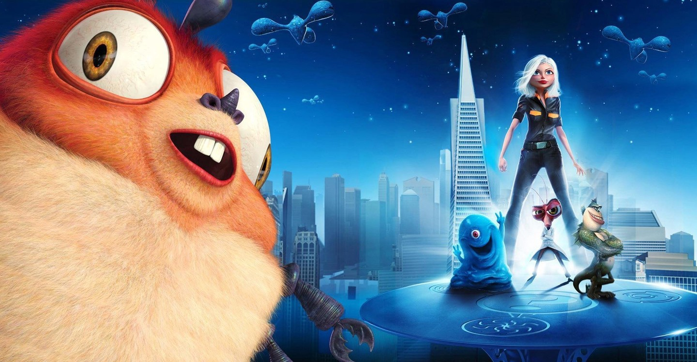

| Pixar |
La producción de Toy Story 2 deterioró la relación sostenida por ambos estudios hasta entonces.
Pixar consideraba que las ganancias no eran equitativas, ya que Disney estaba a cargo solo de la
mercadotecnia y distribución mientras que ellos se encargaban de toda la labor creativa.
Si bien ahora los costos de producción eran sufragados a partes iguales, el acuerdo seguía
otorgándole a Disney los derechos y licencias de cualquiera de sus largometrajes, además de una
cuota por distribución de entre el 10 y 15 % por cada película. |
Al año siguiente se estrenó Cars 3, que obtuvo mejores críticas que Cars 2 debido a la calidad de su animación
y a la emotividad de su trama, además de ser la primera película dirigida por Brian Fee para el estudio.
La primera producción original de Pixar desde The Good Dinosaur, así como el primer filme inspirado en una cultura
extranjera, Coco, tuvo su estreno a finales de 2017 y contó con la dirección de Unkrich, con una trama basada en la
festividad mexicana del Día de Muertos. En sus primeras dos semanas de exhibición en México recaudó más de 36 millones
USD, con lo que se convirtió en la más taquillera en la historia de ese país. |
| DreamWorks Animation |
Chicken Run (2000), una película stop motion que ya estaba en preproducción. Dos años más tarde extendieron
el acuerdo por cuatro películas adicionales. Con Aardman haciendo stop motion, DreamWorks cubrió los tres estilos
principales de animación, además de la tradicional y de computadora. Esta asociación hizo que DreamWorks
participara en la producción de películas stop motion en Bristol, y también hizo que Aardman participara en
algunas de las películas de CGI.
 |
El 13 de marzo de 2007, DreamWorks Animation anunció que lanzaría todas sus películas, comenzando con
Monsters vs. Aliens (2009), en 3D estereoscópico. Junto con Intel, desarrollaron conjuntamente una nueva
tecnología de creación de películas en 3D, llamada InTru3D. La última película de DreamWorks Animation
distribuida por 20th Century Fox fue Captain Underpants: The First Epic Movie (2017), y su primera película
distribuida por Universal Pictures fue How to Train Your Dragon: The Hidden World (2019) con Abominable (2019),
Trolls World Tour, (2020) The Croods 2 (2020), The Boss Baby 2 (2021), una película sin título de Spirit Riding Free (2021)
y The Bad Guys (2021) en desarrollo.  |
 es una categoría de cine (o de una manera general,
una categoría de arte visual o audiovisual) que se caracteriza por no recurrir a la técnica
del rodaje de imágenes reales sino a una o más técnicas de animación. Las técnicas tradicionales
de animación han sido durante mucho tiempo el dibujo animado (dibujos planos en dos dimensiones
fotografiados imagen por imagen) o la animación en volumen (modelos reducidos o marionetas,
también fotografiados imagen por imagen), aunque en tiempos más recientes también se recurre a
la animación por computadora.
es una categoría de cine (o de una manera general,
una categoría de arte visual o audiovisual) que se caracteriza por no recurrir a la técnica
del rodaje de imágenes reales sino a una o más técnicas de animación. Las técnicas tradicionales
de animación han sido durante mucho tiempo el dibujo animado (dibujos planos en dos dimensiones
fotografiados imagen por imagen) o la animación en volumen (modelos reducidos o marionetas,
también fotografiados imagen por imagen), aunque en tiempos más recientes también se recurre a
la animación por computadora.